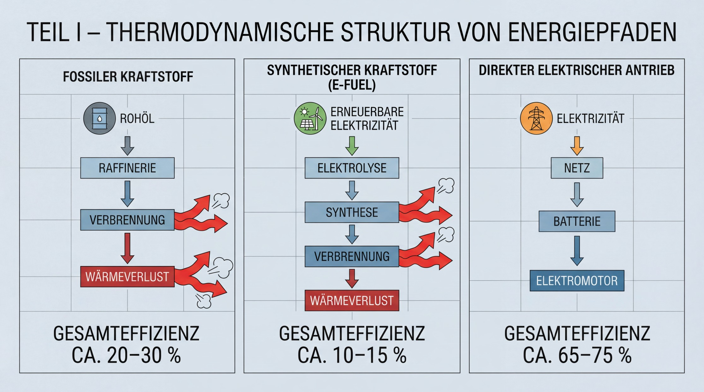
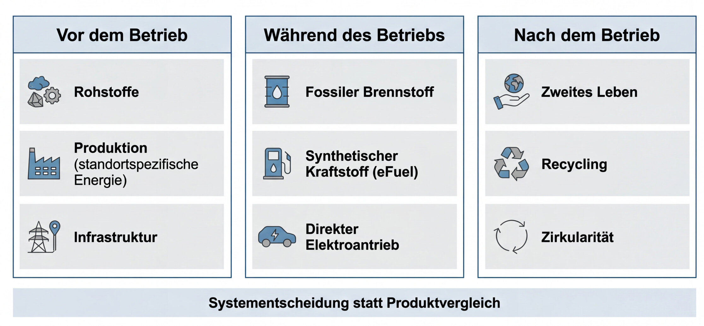
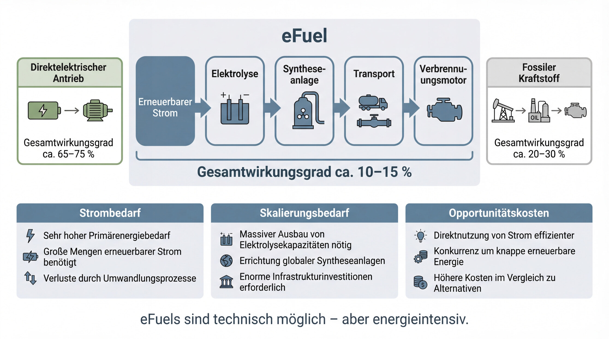
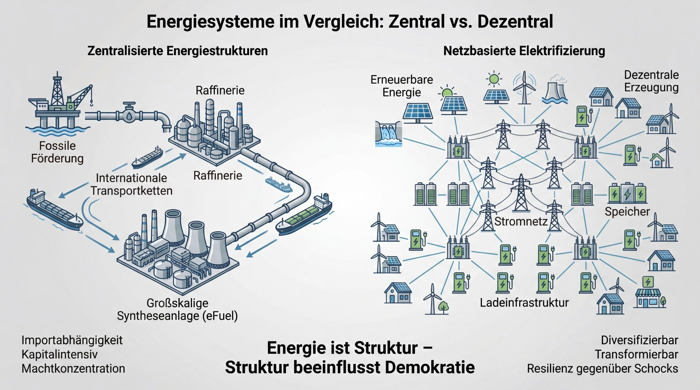
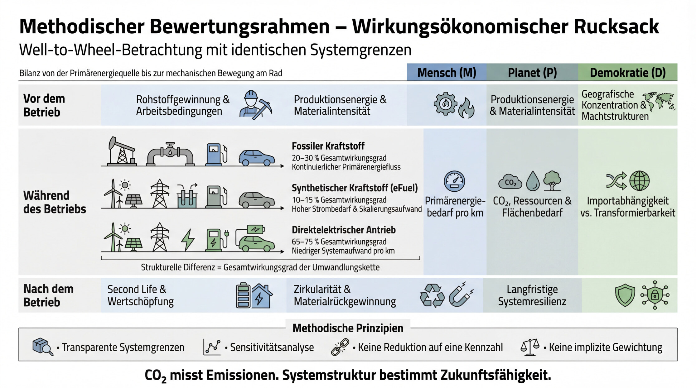
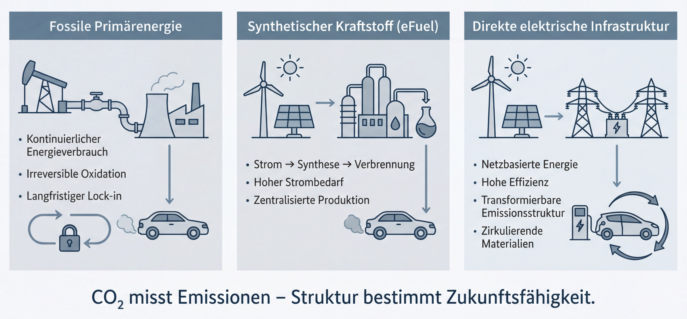

Teil 1: Warum der CO₂-Rucksack das System nicht erklärt
Die Diskussion um Elektroauto versus Verbrenner wird seit Jahren entlang einer einzigen Kennzahl geführt: dem CO₂-Rucksack. Gemeint ist die Summe der Treibhausgasemissionen, die bei Produktion, Betrieb und Entsorgung eines Fahrzeugs entstehen.
Diese Perspektive ist nicht falsch. Aber sie ist unzureichend.
Sie reduziert ein komplexes sozio-technisches System auf eine einzige Dimension. Und genau darin liegt das Problem: Ein Fahrzeug ist kein isoliertes Produkt. Es ist eingebettet in Energieinfrastrukturen, Rohstoffketten, Machtstrukturen, Arbeitsmärkte, geopolitische Beziehungen und regulatorische Rahmenbedingungen. Wer ausschließlich CO₂ betrachtet, analysiert Emissionen - aber nicht das System.
Wenn wir ernsthaft vergleichen wollen, müssen wir daher eine grundlegendere Frage stellen: Was ist eigentlich der Bewertungsmaßstab?
1. Physikalische Grundlage: Thermodynamik als Ausgangspunkt

Bevor wir ökonomisch oder politisch argumentieren, müssen wir physikalisch korrekt bleiben.
Der erste Hauptsatz der Thermodynamik besagt: Energie kann weder erzeugt noch vernichtet werden. Der zweite Hauptsatz ergänzt: Jede Energieumwandlung erhöht die Entropie - nutzbare Energie (Exergie) nimmt ab.
Jede technische Mobilitätslösung ist daher eine Umwandlungskaskade.
Beim Verbrenner beginnt diese Kaskade mit der Förderung von Rohöl, gefolgt von Transport, Raffination, Distribution und schließlich der Verbrennung im Motor. Ein Ottomotor erreicht im Realbetrieb etwa 20-25 % Wirkungsgrad, ein Dieselmotor 25-35 %. Der Rest wird überwiegend als Wärme dissipiert.
Das ist keine politische Bewertung, sondern ein thermodynamischer Sachverhalt.
Das Elektrofahrzeug folgt einer anderen Kaskade: Stromerzeugung, Netzübertragung, Ladeinfrastruktur, Batterie, Elektromotor. Der Elektromotor selbst erreicht Wirkungsgrade von über 90 %. Selbst unter Einbeziehung von Umwandlungs- und Speicherverlusten liegt die direktelektrische Nutzung strukturell deutlich über dem Gesamtwirkungsgrad des Verbrennungssystems.
Das bedeutet nicht automatisch, dass das Elektrofahrzeug „besser“ ist. Es bedeutet lediglich: Die Ausgangsstruktur der Energieumwandlung ist grundlegend unterschiedlich.
Wer diese strukturelle Differenz nicht berücksichtigt, diskutiert ideologisch - nicht physikalisch.
2. Der CO₂-Rucksack: Methodisch sinnvoll - systemisch begrenzt
Lebenszyklusanalysen (Life Cycle Assessments, LCA) sind ein etabliertes Instrument zur Emissionsbilanzierung. Sie ermöglichen es, Treibhausgase entlang der gesamten Wertschöpfungskette zu erfassen. Für die Klimafrage sind sie unverzichtbar.
Doch LCAs haben inhärente methodische Begrenzungen:
Sie arbeiten häufig mit Durchschnittswerten (z. B. nationaler Strommix).
Sie setzen klare Systemgrenzen - und alles außerhalb bleibt unsichtbar.
Sie aggregieren komplexe Effekte zu einer einzigen Kennzahl.
Sie bilden Macht- und Abhängigkeitsstrukturen nicht ab.
Ein CO₂-Rucksack beantwortet die Frage: Wie viele Treibhausgase entstehen?
Er beantwortet nicht die Frage: Welches System ist langfristig resilienter, weniger abhängig oder demokratisch stabiler?
Genau hier beginnt die Erweiterung vom CO₂-Rucksack zum wirkungsökonomischen Rucksack.
3. Das Strommix-Argument - eine methodische Verkürzung
In vielen Debatten wird mit dem nationalen Strommix gerechnet. Formal ist das zulässig. Systemisch ist es häufig unpräzise.
Denn Fahrzeuge laden nicht im statistischen Jahresdurchschnitt. Produktionsstätten operieren nicht zwingend im nationalen Mittelwert. Industrie nutzt zunehmend standortspezifische Energieverträge, Power Purchase Agreements (PPA) oder eigene Erzeugungskapazitäten.
Eine differenzierte Analyse muss daher unterscheiden zwischen:
Durchschnittswerten auf Makroebene
realem Energiepfad auf Mikroebene
zusätzlichem Ausbau erneuerbarer Kapazitäten (Additionality)
Wer diese Differenzierung unterlässt, vergleicht Modellannahmen - nicht reale Systeme.
Das gilt übrigens für beide Seiten der Debatte.
4. Produktion: Der vermeintlich „schwere“ Elektro-Rucksack
Die Batterieproduktion ist energieintensiv. Das ist unbestritten. Aber auch hier entscheidet die Systemgrenze.
Produktionsenergie ist standortspezifisch. Prozesswärme und Strom müssen getrennt betrachtet werden. Ausschussquoten sinken mit zunehmender Skalierung. Recyclinganteile steigen.
Zudem wird häufig übersehen, dass auch der Verbrenner energieintensive Komponenten benötigt: Motorblock, Getriebe, Abgasnachbehandlung, komplexe mechanische Systeme. Die Materialintensität verteilt sich anders - sie verschwindet nicht.
Eine faire Analyse muss daher nicht nur „Emissionen pro Fahrzeug“, sondern Emissionen pro Lebenskilometer vergleichen.
Erst dann entsteht Vergleichbarkeit.
5. Externe Effekte jenseits von CO₂
Mobilität erzeugt nicht nur Klimawirkung.
Sie beeinflusst:
Luftqualität (NOx, Feinstaub)
Lärmemissionen
Flächenverbrauch
Gesundheitskosten
urbane Lebensqualität
Diese Effekte sind systemisch relevant, aber im CO₂-Rucksack nicht enthalten.
Ein System, das thermodynamisch ineffizient arbeitet, benötigt dauerhaft hohe Primärenergiezufuhr. Hohe Primärenergiezufuhr erzeugt Importabhängigkeit. Importabhängigkeit schafft geopolitische Verwundbarkeit. Verwundbarkeit beeinflusst politische Stabilität.
Diese Kette ist nicht normativ, sondern strukturell.
6. Systemgrenzen entscheiden über die Wahrheit
Jede Bilanz ist nur so objektiv wie ihre Annahmen.
Zählt man Methan-Leakage in Förderregionen mit? Zählt man militärische Sicherung von Lieferketten? Zählt man Gesundheitskosten durch Luftverschmutzung? Zählt man Infrastrukturaufbau?
Je nach gewählter Systemgrenze verändert sich das Ergebnis erheblich.
Das bedeutet nicht, dass jede Zahl beliebig ist. Es bedeutet, dass Transparenz über Annahmen zentral ist.
Wissenschaftliche Redlichkeit liegt nicht im gewünschten Resultat, sondern in der Offenlegung der Modellstruktur.
7. Warum wir einen erweiterten Bewertungsrahmen brauchen
Wenn wir Mobilität nicht isoliert, sondern systemisch betrachten, erkennen wir: CO₂ ist eine notwendige, aber nicht hinreichende Größe.
Ein nachhaltiger Vergleich muss berücksichtigen:
Energieeffizienz entlang der Umwandlungskette
Rohstoffprofile und Recyclingfähigkeit
Luft- und Gesundheitswirkungen
Infrastrukturabhängigkeiten
Macht- und Marktstrukturen
Resilienz gegenüber externen Schocks
Erst dann entsteht ein vollständigeres Bild.
Nicht im Sinne von Aktivismus. Sondern im Sinne systemischer Analyse.
Fazit von Teil 1
Der CO₂-Rucksack erklärt Emissionen. Er erklärt nicht das System.
Wenn man Elektroauto und Verbrenner ausschließlich entlang einer Kennzahl vergleicht, wird die Analyse verkürzt und der Blick auf strukturelle Unterschiede in Energieeffizienz, Infrastruktur, Abhängigkeit und Resilienz verstellt.
Die eigentliche Frage lautet daher nicht:
Welches Fahrzeug stößt weniger CO₂ aus?
Sondern:
Welches System erzeugt langfristig die geringere Gesamtbelastung für Mensch, Planet und demokratische Stabilität?
Im nächsten Abschnitt entwickeln wir dafür den erweiterten Bewertungsrahmen: Den wirkungsökonomischen Rucksack entlang von Vorbetrieb, Betrieb und Nachbetrieb - und zeigen, wie sich die Debatte dadurch grundlegend verschiebt.
Teil 2: Die drei Zeitachsen: Vor Betrieb, Während Betrieb, Nach Betrieb
Im ersten Teil haben wir gezeigt, warum der CO₂-Rucksack das System nicht erklärt. Er misst Emissionen - aber nicht Struktur, Resilienz oder Machtverhältnisse.
Wenn wir Mobilität systemisch bewerten wollen, müssen wir entlang der realen Lebenszeit eines Fahrzeugs denken. Nicht als statisches Objekt, sondern als Prozess.
Der wirkungsökonomische Rucksack folgt deshalb drei Zeitachsen:
Vor dem Betrieb
Während des Betriebs
Nach dem Betrieb

Erst diese zeitliche Differenzierung erlaubt eine konsistente Bewertung.
I. Vor dem Betrieb - Rohstoffe, Produktion, Infrastruktur
1. Rohstoffe: Materialprofil statt Schlagwort
Jedes Fahrzeug beginnt mit Geologie.
Der Verbrenner basiert primär auf:
Stahl
Aluminium
Kupfer
Kunststoffe
fossile Energieträger (als Betriebsgrundlage)
Das Elektrofahrzeug benötigt zusätzlich:
Lithium
Nickel / Mangan / Kobalt (je nach Zellchemie)
Graphit
Seltene Erden (für bestimmte Motorvarianten)
Häufig wird hier verkürzt argumentiert: „Lithium ist problematisch.“
Systemisch korrekt ist:
Öl ist ebenfalls ein Rohstoff mit geopolitischer Konzentration.
Beide Systeme erzeugen Abhängigkeiten.
Die Frage ist nicht „ob“, sondern wie stark und wie diversifizierbar.
Entscheidend sind:
geographische Konzentration
Substituierbarkeit
Recyclingfähigkeit
Materialintensität pro Lebensleistung
Lithium ist kein Energieträger. Es wird nicht verbrannt. Es ist ein zirkulierender Werkstoff.
Öl hingegen ist ein Energieträger, der irreversibel oxidiert wird.
Das ist ein fundamentaler struktureller Unterschied.
2. Produktion: Standort entscheidet
Batterieproduktion ist energieintensiv. Aber Produktionsenergie ist kein Naturgesetz - sie ist standortabhängig.
Entscheidend sind:
Stromquelle des Werks
Prozesswärmequelle
Effizienz der Anlagen
Ausschussquote
Recyclinganteil im Input
Eine Fabrik mit fossiler Strombasis hat einen anderen Rucksack als eine Fabrik mit erneuerbarer Versorgung oder PPA-Struktur.
Dasselbe gilt für Verbrennungsmotorenwerke.
Wer pauschal mit nationalem Durchschnitt rechnet, ignoriert reale Produktionsentscheidungen.
3. Infrastruktur: Der unsichtbare Rucksack
Ein Fahrzeug ist immer Teil eines Energiesystems.
Beim Verbrenner bedeutet das:
Förderung
Pipelines
Tanker
Raffinerien
Tankstellen
strategische Reserven
Beim Elektrofahrzeug:
Kraftwerke
Netze
Transformatoren
Ladeinfrastruktur
Speicher
Beide Systeme benötigen Infrastruktur. Der Unterschied liegt in der Struktur:
Fossile Infrastruktur ist hochzentralisiert und kontinuierlich primärenergieabhängig.
Elektrische Infrastruktur ist netzbasiert und potenziell dezentral erweiterbar.
Diese Differenz wirkt langfristig auf Marktstrukturen und Resilienz.
II. Während des Betriebs - Energiepfad und externe Effekte
Hier entstehen die größten Missverständnisse.
1. Energie im Betrieb: Nicht Strommix, sondern realer Ladepfad
Ein Elektrofahrzeug lädt nicht im statistischen Mittelwert.
Entscheidend ist:
Heimladen mit PV
Quartierslösungen
Flottenladen
Schnellladen mit Ökostromvertrag
Additionality (wird zusätzlicher EE-Ausbau ausgelöst?)
Das bedeutet nicht, dass der Strom immer emissionsfrei ist. Aber es bedeutet, dass eine pauschale Strommix-Betrachtung analytisch grob ist.
Beim Verbrenner ist die Energiequelle hingegen fix: fossiler Kraftstoff.
Hier existiert keine strukturelle Dekarbonisierungsoption ohne vollständigen Systemwechsel.
2. Wirkungsgrad im Alltag
Die thermodynamische Differenz aus Teil I wirkt sich hier konkret aus:
Ein ineffizientes System benötigt dauerhaft hohe Primärenergiezufuhr.
Hohe Primärenergiezufuhr bedeutet:
hohe Importmengen
hohe Preissensitivität
hohe geopolitische Verwundbarkeit
Effizienz ist daher nicht nur eine technische, sondern eine systemische Größe.
3. Externe Effekte
Während des Betriebs entstehen:
NOx-Emissionen
Feinstaub (auch nicht nur aus Auspuff, sondern Reifen und Bremsen)
Lärmemissionen
Wärmeverluste
Elektrische Antriebe eliminieren lokale Abgasemissionen, reduzieren Lärm und verändern urbane Belastungsstrukturen. Diese Effekte tauchen im CO₂-Rucksack nicht auf - sind aber gesellschaftlich relevant.
Neben direkter Elektrifizierung existiert mit synthetischen Kraftstoffen (eFuels) ein alternativer Energiepfad, der gesondert betrachtet werden muss.
III. Nach dem Betrieb - Zirkularität oder Verlust?
Der dritte Zeitabschnitt wird häufig unterschätzt.
1. Verbrenner-System
Verschrottung
Metallrecycling
Reststoffe
irreversible Verbrennung der Energieträger
Der Energieträger ist vollständig dissipiert.
2. Elektrofahrzeug-System
Second Life (z. B. stationäre Speicher)
Remanufacturing
Materialrückgewinnung
Entscheidend ist hier nicht die Recyclingquote allein, sondern:
Rückgewinnungsrate einzelner Elemente
Reinheit
tatsächliche Rückführung in neue Zellproduktion
Zirkularität ist kein Marketingbegriff. Sie ist ein struktureller Unterschied zwischen Verbrauch und Kreislauf.
IV. Die systemische Verschiebung
Wenn wir die drei Zeitachsen zusammenführen, erkennen wir:
Der Verbrenner basiert auf einem kontinuierlichen Primärenergiefluss mit irreversibler Oxidation.
Das Elektrofahrzeug basiert auf einem potenziell zirkulären Materialsystem mit veränderbarem Energieinput.
Das heißt nicht, dass das Elektrofahrzeug automatisch optimal ist.
Es heißt lediglich:
Die Systeme sind strukturell unterschiedlich organisiert.
Und genau deshalb kann ein reiner CO₂-Rucksack diese Unterschiede nicht vollständig abbilden.
Fazit von Teil II
Eine seriöse Analyse muss entlang der drei Zeitachsen differenzieren:
Vor Betrieb
Während Betrieb
Nach Betrieb
Und sie muss Standort, Energiepfad, Materialprofil und Zirkularität berücksichtigen.
Erst dann wird sichtbar, dass wir nicht nur Fahrzeuge vergleichen - sondern zwei unterschiedliche Energie- und Industriesysteme.
Teil 3: Exkurs: eFuels im wirkungsökonomischen Bewertungsrahmen
In der Debatte um Verbrenner und Elektromobilität taucht regelmäßig ein Argument auf: Mit synthetischen Kraftstoffen - sogenannten eFuels - könne der bestehende Verbrennungsmotor klimaneutral betrieben werden.
Dieses Argument verdient eine sachliche Analyse.
Denn eFuels verändern nicht den Motor - sie verändern den Energiepfad.
Um sie systemisch einzuordnen, müssen wir fünf Ebenen betrachten: Thermodynamik, Effizienzkaskade, Strombedarf, Opportunitätskosten und sinnvolle Einsatzfelder.

1. Thermodynamik: Der Motor bleibt ein Wärmekraftprozess
Ein Verbrennungsmotor ist ein Wärmekraftprozess. Er wandelt chemische Energie in mechanische Arbeit um - mit unvermeidbaren Entropieverlusten.
Unabhängig davon, ob der Kraftstoff fossilen Ursprungs oder synthetisch hergestellt ist, gilt:
Der Wirkungsgrad eines Ottomotors liegt realistisch bei etwa 20-25 %, ein Dieselmotor bei 25-35 %.
Das bedeutet: Ein Großteil der eingesetzten Energie wird als Abwärme dissipiert.
eFuels ändern daran nichts. Sie verändern lediglich die Herkunft der chemischen Energie.
Thermodynamisch bleibt der Prozess identisch.
2. Die Effizienzkaskade bei eFuels
Die Herstellung synthetischer Kraftstoffe erfolgt typischerweise in mehreren Schritten:
Erzeugung erneuerbaren Stroms
Elektrolyse → Wasserstoff
Synthese (z. B. Fischer-Tropsch oder Methanolroute)
Aufbereitung und Transport
Verbrennung im Motor
Methodischer Hinweis: Für alle drei Energiepfade gilt: Der Vergleich beginnt nicht im Tank und nicht an der Steckdose, sondern bei der jeweiligen Primärenergiequelle - also bei Rohöl im Boden bzw. bei erneuerbarer Stromerzeugung an der Anlage - und endet bei der mechanischen Bewegung am Rad.
Jede Umwandlungsstufe entlang dieser Kette erzeugt Verluste.
Grob betrachtet - je nach Technologie und Annahmen - liegt der Gesamtwirkungsgrad von erneuerbarem Strom bis zur mechanischen Bewegung im Fahrzeug bei etwa 10-15 %.
Zum Vergleich:
Direktelektrische Nutzung im batterieelektrischen Fahrzeug erreicht typischerweise 65-75 % vom Strom bis zur Bewegung.
Das bedeutet:
Für die gleiche Fahrleistung wird bei Nutzung von eFuels ein Vielfaches an erneuerbarer Primärenergie benötigt. Das ist kein normatives Argument. Es ist eine Konsequenz der Umwandlungskette.
3. Strombedarf und Skalierungsfrage
Die Effizienzdifferenz führt unmittelbar zur Skalierungsfrage.
Wenn erneuerbarer Strom eine begrenzte Ressource ist - sei es aufgrund von Flächenverfügbarkeit, Netzausbau oder Investitionskapazität - dann stellt sich die Frage der Priorisierung.
Ein System mit niedrigem Gesamtwirkungsgrad benötigt:
größere Erzeugungskapazitäten
größere Flächen
höhere Investitionen
höhere Netz- und Transportleistungen
eFuels sind technisch herstellbar. Aber sie sind stromintensiv.
Je größer der Anteil synthetischer Kraftstoffe im Straßenverkehr, desto größer wird der Bedarf an erneuerbarer Stromerzeugung. Damit verschiebt sich die Debatte von der Motorentechnologie zur Energieinfrastruktur.
4. Systemische Opportunitätskosten
Hier wird der wirkungsökonomische Blick entscheidend.
Wenn eine Kilowattstunde erneuerbarer Energie direkt in einem Elektromotor genutzt werden kann - oder alternativ in einem energieintensiven Syntheseprozess gebunden und anschließend mit hohen Verlusten verbrannt wird -, dann entsteht eine Opportunitätsentscheidung.
Die Frage lautet: Wo erzielt hochwertige elektrische Energie die größte Systemwirkung?
In einem Wärmekraftprozess? Oder in direkter elektrischer Nutzung?
Opportunitätskosten sind keine moralische Kategorie. Sie sind eine Allokationsfrage.
In einem Energiesystem mit begrenzten Ausbaugeschwindigkeiten kann die Wahl des Energiepfads strukturelle Auswirkungen auf Geschwindigkeit und Kosten der Transformation haben.
5. Zentralisierung und Infrastrukturstruktur
eFuels werden in der Regel in großindustriellen Anlagen produziert, häufig dort, wo erneuerbare Energie im Überschuss vorhanden ist - etwa in sonnen- oder windreichen Regionen.
Das bedeutet:
hohe Kapitalintensität
großskalige Produktionsanlagen
internationale Transportketten
Importabhängigkeit
In dieser Hinsicht ähneln eFuel-Strukturen fossilen Lieferketten stärker als dezentralen Stromnetzen.
Sie verändern den CO₂-Fußabdruck potenziell - aber nicht zwingend die Zentralisierungsstruktur. Auch das ist kein Werturteil, sondern eine strukturelle Beobachtung.
6. Sinnvolle Anwendungsfelder
Eine systemische Analyse bedeutet nicht, eFuels pauschal abzulehnen.
Im Gegenteil: Sie haben klare Einsatzfelder, in denen direkte Elektrifizierung technisch oder physikalisch schwierig ist:
Luftfahrt
Hochseeschifffahrt
bestimmte Industrieprozesse
Bestandsflotten in Übergangsphasen
In diesen Bereichen kann synthetischer Kraftstoff eine Brückentechnologie oder langfristige Lösung darstellen.
Die entscheidende Frage ist daher nicht:
„Sind eFuels gut oder schlecht?“
Sondern:
„In welchem Systemsegment erzeugen sie die höchste Gesamtwirkung?“
7. Einordnung im wirkungsökonomischen Rucksack
Im Bewertungsraster des wirkungsökonomischen Rucksacks erscheinen eFuels daher als:
potenziell klimaneutral bei ausreichendem erneuerbaren Input
thermodynamisch ineffizient im Vergleich zur direkten Elektrifizierung
infrastrukturell eher zentralisierend
ressourcenintensiv im Strombedarf
Sie sind technisch möglich. Aber ihre systemische Wirkung hängt stark vom Einsatzbereich und vom Energieangebot ab.
Fazit zu eFuels:
eFuels lösen nicht das Effizienzproblem des Verbrennungsmotors. Sie verschieben es in die Energieerzeugung.
Sie sind eine Option - aber keine universelle Lösung. In einem wirkungsökonomischen Bewertungsrahmen müssen sie daher differenziert eingeordnet werden: Nicht als Ersatz für jede Form der Elektrifizierung, sondern als gezielte Ergänzung dort, wo Alternativen physikalisch begrenzt sind.
Im nächsten Abschnitt kehren wir zurück zur systemischen Gesamtbetrachtung und analysieren, wie unterschiedliche Energiepfade Macht-, Markt- und Resilienzstrukturen langfristig verändern.
Teil 4: Macht, Resilienz und die demokratische Dimension von Mobilität
In Teil 1 haben wir gezeigt, dass der CO₂-Rucksack das System nicht erklärt. In Teil 2 haben wir die drei Zeitachsen - Vorbetrieb, Betrieb, Nachbetrieb - strukturiert.
Nun folgt die Dimension, die in klassischen Lebenszyklusanalysen vollständig fehlt:
Mobilität ist ein Macht- und Infrastruktursystem.
Und jedes Energiesystem erzeugt spezifische Abhängigkeitsstrukturen.

1. Energie ist immer Macht
Energiesysteme sind nie neutral.
Wer Energie kontrolliert, kontrolliert:
Preisbildung
Versorgungssicherheit
industrielle Wettbewerbsfähigkeit
geopolitische Hebel
Historisch waren fossile Systeme hochzentralisiert:
Förderung in wenigen Regionen
vertikal integrierte Konzerne
Oligopolstrukturen
strategische Abhängigkeiten
Die Struktur ist nicht zufällig. Sie ergibt sich aus der Natur des Energieträgers.
Öl und Gas sind lagerfähig, transportfähig, handelbar und global konzentriert. Das schafft Markt- und Machtkonzentration.
2. Primärenergieabhängigkeit vs. Elektrifizierung
Der Verbrenner benötigt kontinuierlich neue Primärenergie.
Jeder gefahrene Kilometer verbraucht irreversibel oxidierten Energieträger.
Das bedeutet:
dauerhafte Importabhängigkeit
dauerhafte Preissensitivität
dauerhafte Exposition gegenüber geopolitischen Konflikten
Elektrische Antriebe verändern diese Struktur.
Sie verlagern die Abhängigkeit:
weg vom kontinuierlichen Primärenergieimport
hin zu Infrastruktur, Netzen und Materialkreisläufen
Der Energieinput wird potenziell diversifizierbar.
Strom kann erzeugt werden aus:
Wind
Sonne
Wasser
Biomasse
Geothermie
konventionellen Quellen
Die strukturelle Frage lautet daher nicht: „Ist Strom heute sauber?“
Sondern:
„Ist das System transformierbar?“
3. Zentralisierung vs. Dezentralisierung
Fossile Systeme sind inhärent zentralisiert:
Förderung → Raffinerie → Distribution
hohe Kapitalintensität
hohe Eintrittsbarrieren
Elektrische Systeme sind netzbasiert.
Netze können zentral oder dezentral organisiert sein. Photovoltaik auf Dächern, Quartiersspeicher, kommunale Energiegenossenschaften - all das sind strukturelle Optionen.
Das bedeutet nicht, dass Elektrizität automatisch dezentral ist.
Aber sie ist strukturell dezentralisierbar.
Diese Option existiert im fossilen System nicht.
4. Resilienz gegenüber Schocks
Systemresilienz beschreibt die Fähigkeit, Störungen zu absorbieren.
Ein System mit:
hoher Importabhängigkeit
wenigen Lieferanten
geopolitischer Konzentration
ist vulnerabler gegenüber externen Schocks.
Ein diversifiziertes, elektrifiziertes System kann:
Last verschieben
Speicher einsetzen
lokale Erzeugung integrieren
Energiequellen austauschen
Resilienz ist daher keine moralische Kategorie. Sie ist eine systemtheoretische Eigenschaft.
5. Marktstruktur und Wettbewerb
Fossile Wertschöpfungsketten sind historisch geprägt durch:
vertikale Integration
starke Konzentration
langfristige Investitionszyklen
Elektrifizierung erzeugt neue Marktsegmente:
Ladeinfrastruktur
Software
Speicher
Energiemanagement
Das verschiebt Wettbewerbsebenen. Gleichzeitig entstehen neue Konzentrationsrisiken - etwa bei Batterieproduktion oder Rohstoffraffination.
Der wirkungsökonomische Rucksack muss daher nicht nur Emissionen, sondern auch Marktstrukturentwicklung bewerten.
6. Demokratie als Systemvariable
Demokratische Stabilität hängt unter anderem von:
wirtschaftlicher Planbarkeit
sozialer Gerechtigkeit
Versorgungssicherheit
Preisstabilität
Energiepreisschocks wirken politisch destabilierend.
Je höher die strukturelle Abhängigkeit von extern kontrollierten Ressourcen, desto größer die Verwundbarkeit.
Ein System, das diversifizierbar und transformierbar ist, besitzt strategische Handlungsoptionen.
Diese Option ist selbst ein Wert.
7. Vom Produkt zur Systementscheidung
Die Debatte wird häufig auf Fahrzeugebene geführt.
Doch tatsächlich vergleichen wir:
ein System kontinuierlicher fossiler Primärenergieabhängigkeit mit
einem System potenziell elektrifizierter Infrastruktur und zirkulierender Materialien.
Der Unterschied liegt nicht nur im Auspuff. Er liegt in der Struktur des Energiesystems.
8. Keine Idealisierung - nur Strukturvergleich
Das bedeutet nicht:
dass Elektromobilität perfekt ist
dass Batterieproduktion keine ökologischen Belastungen erzeugt
dass es keine neuen Abhängigkeiten gibt
Es bedeutet lediglich:
Die Systeme erzeugen unterschiedliche Macht- und Resilienzprofile.
Und diese Profile sind im CO₂-Rucksack unsichtbar.
Fazit von Teil 4
Mobilität ist kein reines Emissionsthema. Sie ist eine infrastrukturelle und machtstrukturelle Entscheidung.
Ein wirkungsökonomischer Rucksack muss deshalb neben Klima und Ressourcen auch berücksichtigen:
Abhängigkeitsstrukturen
Markt- und Machtkonzentration
Resilienz gegenüber Schocks
Transformierbarkeit des Systems
eFuels erzeugen ebenfalls:
große zentrale Produktionsanlagen
globale Transportstrukturen
Importabhängigkeit (Sonnen-/Windreiche Regionen)
Damit wird klar:
eFuels verändern das CO₂-Profil, aber nicht zwingend die Zentralisierungsstruktur.
Erst wenn diese Dimension einbezogen wird, entsteht eine vollständige Bewertung.
Im nächsten Abschnitt führen wir die drei Ebenen - Zeitachsen, physikalische Struktur und demokratische Wirkung - zusammen und entwickeln einen konsistenten Bewertungsrahmen entlang von Mensch, Planet und Demokratie (MPD).
Teil 5: Methodik, Systemgrenzen und Bewertungslogik
In den ersten drei Teilen haben wir gezeigt:
CO₂ allein erklärt nicht das System.
Mobilität ist eine zeitlich gestaffelte Prozesskette.
Energiesysteme erzeugen Macht- und Resilienzstrukturen.
Nun stellt sich die entscheidende Frage: Wie bewertet man das konsistent - ohne normativen Bias? Denn jede Bewertung steht und fällt mit ihrer Methodik.

1. Die zentrale Herausforderung: Systemgrenzen
Jede Analyse beginnt mit einer Grenzziehung.
Zählt man nur Fahrzeugproduktion? Oder auch Infrastruktur? Oder geopolitische Sicherung? Oder Gesundheitsfolgekosten?
Die Systemgrenze entscheidet über das Ergebnis stärker als die Einzelzahl.
Eine wissenschaftlich saubere Bewertung muss daher:
Die Systemgrenze explizit offenlegen
Mehrere Grenzvarianten vergleichen
Sensitivitäten darstellen
Transparenz ist wichtiger als das Resultat.
2. Die drei Zeitachsen als Strukturrahmen
Die Bewertung erfolgt entlang der bereits entwickelten Zeitachsen:
Vor Betrieb
Während Betrieb
Nach Betrieb
Innerhalb jeder Phase werden Wirkungen entlang dreier Dimensionen erfasst:
Mensch (M)
Planet (P)
Demokratische Resilienz (D)
Damit entsteht eine 3×3-Matrix pro Phase.
Das verhindert die Reduktion auf eine einzige Kennzahl.
3. Erweiterung im Bewertungsraster: Drei Energiepfade im Betriebsabschnitt
Im methodischen Raster des wirkungsökonomischen Rucksacks wird die Phase „Während des Betriebs“ explizit nach Energiepfaden differenziert. Denn die strukturellen Unterschiede liegen nicht primär im Fahrzeug, sondern in der Umwandlungskette der eingesetzten Energie.
Methodische Klarstellung (Systemgrenze): Für alle drei Energiepfade wird der Gesamtwirkungsgrad konsequent entlang der gesamten Umwandlungskette - von der Primärenergiequelle bis zur mechanischen Bewegung am Rad - betrachtet (Well-to-Wheel).
Beim fossilen Pfad beginnt die Bilanz bei der Rohölförderung. Beim direkten elektrischen Pfad bei der Stromerzeugung an der Erzeugungsanlage. Beim eFuel-Pfad ebenfalls bei der erneuerbaren Stromerzeugung vor Elektrolyse und Synthese.
Damit gelten für alle drei Pfade identische Systemgrenzen.
Für eine konsistente Bewertung sind drei Energiepfade zu unterscheiden:
1. Fossiler Kraftstoff
Primärenergie (Rohöl) wird gefördert, transportiert, raffiniert und im Verbrennungsmotor oxidiert. Der reale Gesamtwirkungsgrad von der im Kraftstoff enthaltenen chemischen Energie bis zur mechanischen Bewegung im Fahrzeug liegt typischerweise bei:
ca. 20-30 %
Das bedeutet: Rund 70-80 % der eingesetzten Energie gehen als Wärme verloren.
Der Energiepfad ist kontinuierlich primärenergieabhängig.
2. Direktelektrischer Antrieb
Die Bilanz beginnt bei der Stromerzeugung an der Primärenergiequelle (z. B. Wind-, Solar- oder konventionelle Kraftwerksanlage). Der erzeugte Strom wird über Netz, Ladeinfrastruktur, Batterie und Elektromotor in mechanische Bewegung überführt.
Typische Wirkungsgrade:
Netz + Ladeverluste: 90-95 %
Batterie (inkl. Umrichter): 90-95 %
Elektromotor: > 90 %
Gesamtwirkungsgrad vom Strom bis zur Radbewegung:
ca. 65-75 %
Damit benötigt dieser Energiepfad für die gleiche Fahrleistung nur etwa ein Drittel bis ein Viertel der Primärenergie eines Verbrenners.
3. Synthetischer Kraftstoff (eFuel)
Der Energiepfad lautet:
Erneuerbarer Strom → Elektrolyse (ca. 65-75 %) → Synthese + Aufbereitung (ca. 60-80 %) → Transport → Verbrennung im Motor (20-30 %)
Multipliziert man diese Wirkungsgrade, ergibt sich vom eingesetzten Strom bis zur Radbewegung:
ca. 10-15 % Gesamtwirkungsgrad
Das bedeutet:
Für die gleiche Fahrleistung wird im Vergleich zur direkten Elektrifizierung etwa das 4- bis 6-Fache an erneuerbarer Stromerzeugung benötigt.
Methodische Konsequenz
Im MPD-Raster muss daher neben Emissionen auch erfasst werden:
Primärenergiebedarf pro Kilometer
Strombedarf pro Kilometer
Skalierungsbedarf erneuerbarer Erzeugungskapazitäten
Infrastruktur- und Flächenbedarf
Die Differenz zwischen fossilem Kraftstoff, direkter Elektrifizierung und eFuel liegt strukturell im Gesamtwirkungsgrad der Umwandlungskette und im daraus resultierenden Systemaufwand pro Mobilitätseinheit.
Diese Differenz ist physikalisch bedingt - nicht politisch.
4. Quantitativ vs. qualitativ - was ist messbar?
Nicht alles ist direkt monetarisierbar. Und nicht alles sollte monetarisiert werden.
Quantifizierbar:
CO₂-Emissionen
Energieverbrauch
Materialintensität
Recyclingquoten
Luftschadstoffe
Bedingt quantifizierbar:
Gesundheitsfolgekosten
Preisvolatilität
Importabhängigkeit
Strukturell qualitativ:
Transformierbarkeit des Systems
Machtkonzentration
Dezentralisierbarkeit
Eine seriöse Bewertung kombiniert daher:
harte physikalische Daten
ökonomische Indikatoren
systemtheoretische Kriterien
5. Sensitivitätsanalyse statt Absolutheit
Ein häufiges Problem in Mobilitätsdebatten sind fixe Zahlen:
„Ein Elektroauto amortisiert sich nach X Kilometern.“ „Ein Verbrenner ist unter Y Bedingungen effizienter.“
Solche Aussagen hängen extrem von Annahmen ab:
Lebensdauer
Fahrprofil
Stromquelle
Produktionsstandort
Recyclingrate
Wissenschaftlich korrekt ist daher:
Keine fixe Zahl, sondern Bandbreiten.
Eine robuste Bewertung zeigt:
Best-Case
Worst-Case
Real-Case
Und sie macht transparent, welche Variable das Ergebnis am stärksten beeinflusst.
6. Diskontierung und Zeitdimension
Emissionen heute und Emissionen in 20 Jahren wirken nicht identisch.
Die Bewertung hängt davon ab:
ob man zukünftige Effekte diskontiert
wie man Übergangsphasen bewertet
wie schnell ein System transformierbar ist
Ein fossiles System mit hohem Lock-in erzeugt langfristige Pfadabhängigkeit. Ein elektrisches System mit steigendem EE-Anteil verändert seine Bilanz dynamisch.
Das bedeutet:
Die Bewertung ist keine statische Momentaufnahme. Sie ist eine dynamische Systemanalyse.
7. Das MPD-Raster - Struktur statt Ideologie
Um Vergleichbarkeit herzustellen, wird jede Phase entlang von:
Mensch (Arbeitsbedingungen, Gesundheit, soziale Stabilität)
Planet (Klima, Ressourcen, Schadstoffe, Biodiversität)
Demokratie (Abhängigkeit, Resilienz, Marktstruktur, Machtkonzentration)
bewertet.
Wichtig: Dieses Raster ist kein moralischer Filter. Es ist ein Wirkungsfilter.
Er fragt nicht: „Was gefällt uns?“ Er fragt: „Welche systemische Wirkung entsteht?“
8. Warum ein einzelner Score problematisch ist
Eine aggregierte Gesamtzahl ist kommunikativ attraktiv - aber analytisch gefährlich.
Warum?
Weil Gewichtungen implizite Wertentscheidungen enthalten.
Ist Klima wichtiger als Resilienz? Ist kurzfristige Effizienz wichtiger als langfristige Transformierbarkeit? Jede Aggregation versteckt normative Prioritäten.
Deshalb ist Transparenz über Gewichtung zwingend erforderlich.
Eine Möglichkeit:
separate Teilindikatoren
offene Gewichtungslogik
Szenarien mit alternativen Gewichtungen
So bleibt die Analyse überprüfbar.
9. Wissenschaftliche Redlichkeit
Eine methodisch saubere Bewertung bedeutet:
keine selektive Datenauswahl
keine idealisierten Extremfälle
keine pauschalen Annahmen
Offenlegung von Unsicherheiten
Ziel ist nicht, ein System zu „gewinnen“ zu lassen. Ziel ist, strukturelle Unterschiede sichtbar zu machen.
Fazit von Teil 5
Ein wirkungsökonomischer Rucksack ist kein Meinungsinstrument. Er ist ein Bewertungsrahmen.
Er kombiniert:
Physik
Ökonomie
Systemtheorie
Und er ersetzt die Reduktion auf CO₂ durch eine multidimensionale Betrachtung.
Damit wird Mobilität nicht ideologisch, sondern strukturell vergleichbar.
Im nächsten und letzten Teil führen wir alles zusammen: Was bedeutet diese Analyse für politische Entscheidungen, industrielle Strategien und individuelle Kaufentscheidungen?
Teil 6: Was folgt daraus für Politik, Industrie und individuelle Entscheidungen?
Wir haben gesehen:
Der CO₂-Rucksack misst Emissionen - aber nicht Struktur.
Mobilität verläuft entlang von drei Zeitachsen.
Energiesysteme erzeugen Macht- und Abhängigkeitsprofile.
Eine seriöse Bewertung braucht transparente Systemgrenzen und Sensitivitätsanalysen.
Nun stellt sich die entscheidende Frage: Was folgt daraus praktisch? Denn Analyse ohne Konsequenz bleibt akademisch.

1. Politik: Systementscheidungen statt Symbolpolitik
Wenn Mobilität Teil eines Energiesystems ist, dann ist die Wahl des Antriebs keine reine Technologiefrage, sondern eine Strukturentscheidung.
Politik entscheidet damit über:
Importabhängigkeit
Infrastrukturpfade
Investitionszyklen
industrielle Wertschöpfung
Resilienz gegenüber geopolitischen Schocks
Ein fossiles System bedeutet dauerhafte Primärenergieabhängigkeit. Ein elektrifiziertes System bedeutet Infrastrukturaufbau und Materialkreisläufe. Beides kostet Kapital. Aber nur eines ist strukturell transformierbar.
Politische Bewertung sollte daher nicht fragen: „Welcher Antrieb ist heute günstiger?“
Sondern: „Welches System erzeugt langfristig geringere systemische Risiken?“
2. Industrie: Wettbewerbsfähigkeit in einer transformierenden Welt
Industrie denkt in Skaleneffekten, Innovationszyklen und globalen Märkten.
Thermodynamisch effizientere Systeme haben langfristig einen strukturellen Vorteil:
geringerer Primärenergiebedarf
geringere operative Kosten
höhere Integration in digitale Systeme
Elektrifizierung ist nicht nur ein Klimathema. Sie ist ein Effizienz- und Wettbewerbsthema.
Gleichzeitig entstehen neue Abhängigkeiten - etwa bei Batterierohstoffen oder Zellfertigung.
Die strategische Frage lautet daher: Wie diversifiziert und zirkulär kann ein System gestaltet werden?
Industriepolitik muss hier zwischen kurzfristiger Stabilität und langfristiger Strukturverschiebung abwägen.
3. Infrastruktur als langfristiger Lock-in
Infrastrukturen haben Lebensdauern von Jahrzehnten.
Wer heute in:
Raffinerien
Verbrennermotorwerke
fossile Logistik
investiert, bindet Kapital langfristig an ein System mit irreversibler Energieoxidation.
Wer in:
Netze
Speicher
Ladeinfrastruktur
erneuerbare Erzeugung
investiert, bindet Kapital an ein System, dessen Emissionsprofil mit dem Energiemix sinken kann.
Das ist ein fundamentaler Unterschied.
4. Individuelle Kaufentscheidung - was ist rational?
Auf individueller Ebene wird die Debatte häufig emotional geführt.
Rational betrachtet hängt die Entscheidung von mehreren Faktoren ab:
reale Fahrleistung
Zugang zu Ladeinfrastruktur
Stromquelle
Lebensdauer
Kostenstruktur
Aber auch hier gilt: Man entscheidet nicht nur für ein Fahrzeug. Man entscheidet sich für die Teilnahme an einem System. Ein Fahrzeug ist eine Infrastrukturentscheidung im Kleinen.
5. Übergangsphase und Realität
Wichtig ist: Systeme transformieren nicht über Nacht.
Während der Übergangsphase existieren Mischsysteme:
Strom mit fossilem Anteil
Produktion mit unterschiedlichen Energiequellen
globale Lieferketten
Das bedeutet:
Es gibt keine perfekte Lösung im Hier und Jetzt. Aber es gibt strukturell unterschiedliche Entwicklungsrichtungen. Und genau diese Richtung ist entscheidend.
6. Was der Wirkungsökonomische Rucksack sichtbar macht
Der CO₂-Rucksack beantwortet eine Frage:
Wie hoch sind die Emissionen?
Der wirkungsökonomische Rucksack beantwortet mehrere:
Wie effizient ist die Energieumwandlung?
Wie zirkulär ist das Materialsystem?
Wie abhängig ist das System von externen Primärenergiequellen?
Wie resilient ist es gegenüber geopolitischen Schocks?
Wie transformierbar ist seine Emissionsstruktur?
Er erweitert den Blick von einer Emissionskennzahl hin zu einer Systembewertung.
7. Keine Ideologie, sondern Strukturvergleich
Diese Analyse bedeutet nicht:
dass Elektromobilität automatisch optimal ist
dass fossile Systeme keinerlei Vorteile haben
dass es keine offenen Fragen bei Rohstoffen gibt
Sie bedeutet:
Wir vergleichen zwei unterschiedliche Organisationsformen von Energie und Mobilität.
Und diese Organisationsformen erzeugen unterschiedliche langfristige Wirkungen auf:
Mensch
Planet
demokratische Stabilität
Schlussgedanke
Die Debatte um Elektroauto versus Verbrenner wird häufig emotional geführt. Doch jenseits von Lagerdenken bleibt eine nüchterne Erkenntnis:
Mobilität ist kein Produktvergleich. Sie ist eine Systementscheidung.
Der CO₂-Rucksack erklärt Emissionen. Der wirkungsökonomische Rucksack erklärt Struktur.
Und wer über Zukunftsfähigkeit spricht, muss Struktur analysieren - nicht nur Zahlen addieren.